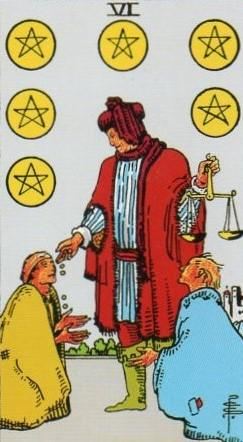
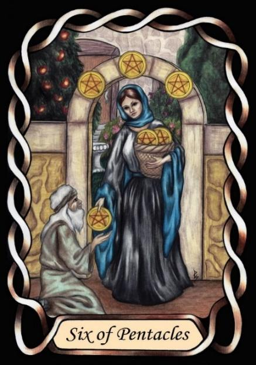

Six of Pentacles


Sign |
|
Two: parenting |
|
Sign Ruler |
|
Element |
Earth: practical |
Modality |
|
Symbol |
Bull |
Decan |
|
Decan Ruler |
|
Time |
Apr 30 - May 10 |
Wealth Taurus II
A Journeyman, ruled by Venus and the Moon, has parenting under control. Resources, money and sleep are adequate, and the beauty of Venus can shine through.
The waxing of this decan’s ruler – the Moon – shows an increase in wealth. The young couple’s efforts have paid off, and they are more comfortable now. Manifestation is working. They can afford to be generous, and to help others starting out. They may well be teaching apprentices of their own. Consider this the Journeyman stage of their career. They are fully trained, no longer apprenticed, and receive fair compensation for their skills.
Inverted: Financial Problems. The Moon can also wane, and there are many possible causes of loss of wealth. Overconfidence, and “living the dream” of the Moon can result in overcommitment, with an inability to weather a financial storm.
Goldschneider Personology
These Taureans appreciate the value of knowledge. They are avid students, and willing teachers. However, their drive to get the best from their students can result in them being demanding and judgemental. This can be especially problematic with people who have not signed on to being taught. These people tend to be admired for their strong physicality, but have a need to be alone.
Interpretation of RWS Imagery
A wealthy Taurus-two distributes money to the poor. The scales may link him to Solomon and the Justice card, which lies in Chesed, the Qabalistic Sefiroth of Mercy. He likes to help those in need, including educating them.
Pymander Imagery
A simple act of charity, with the implication that he has sufficient wealth to be able to be charitable. He is no longer struggling.
Summary
Represents financial stability, generosity, and sharing knowledge, and helping others who are struggling.